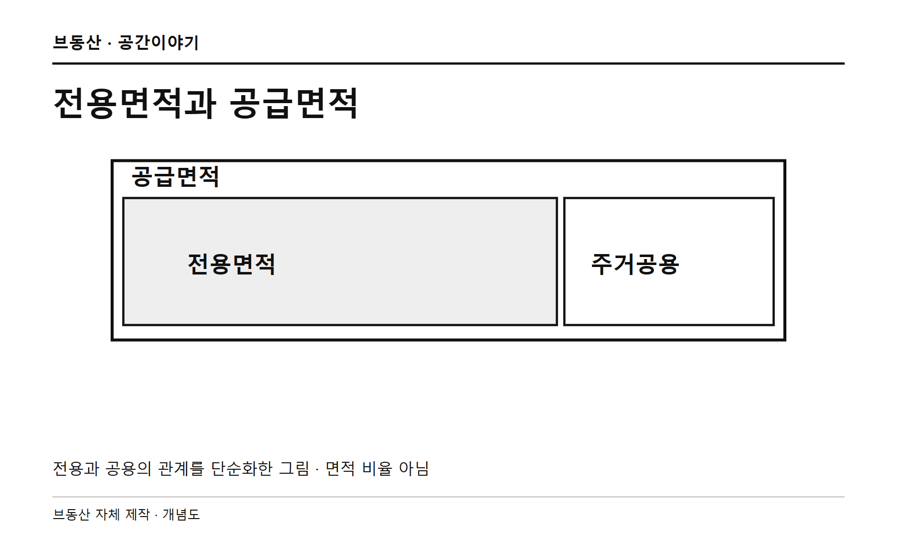
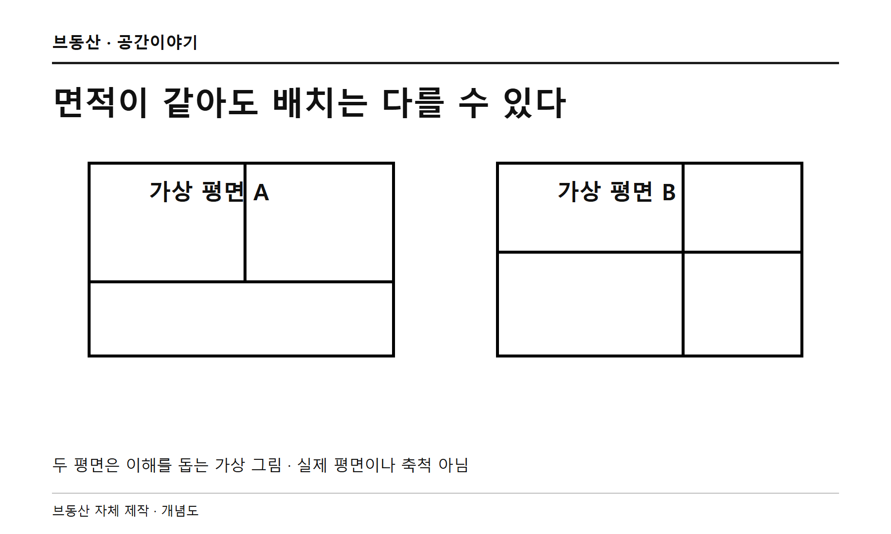
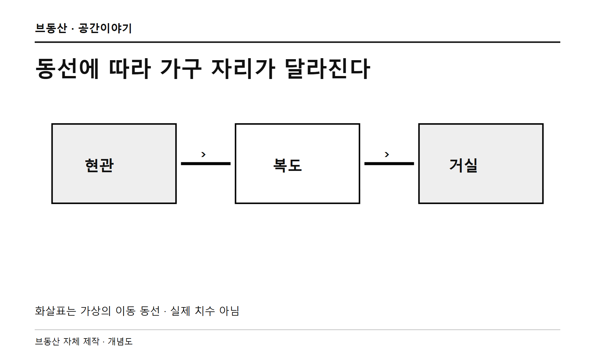
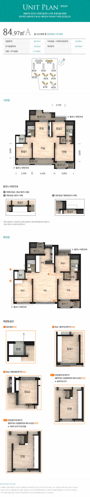
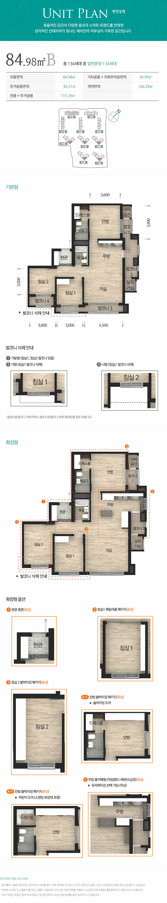
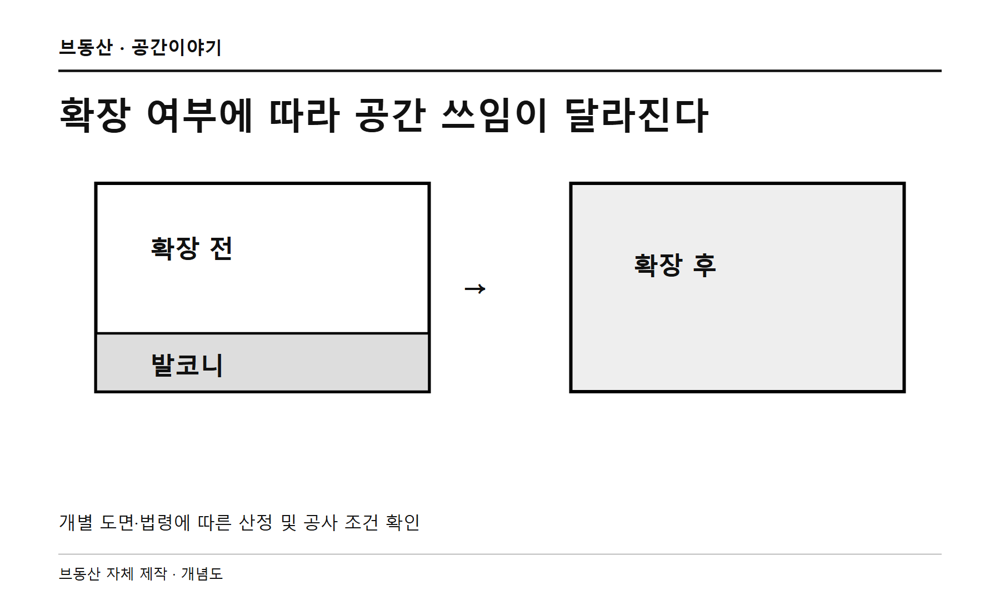
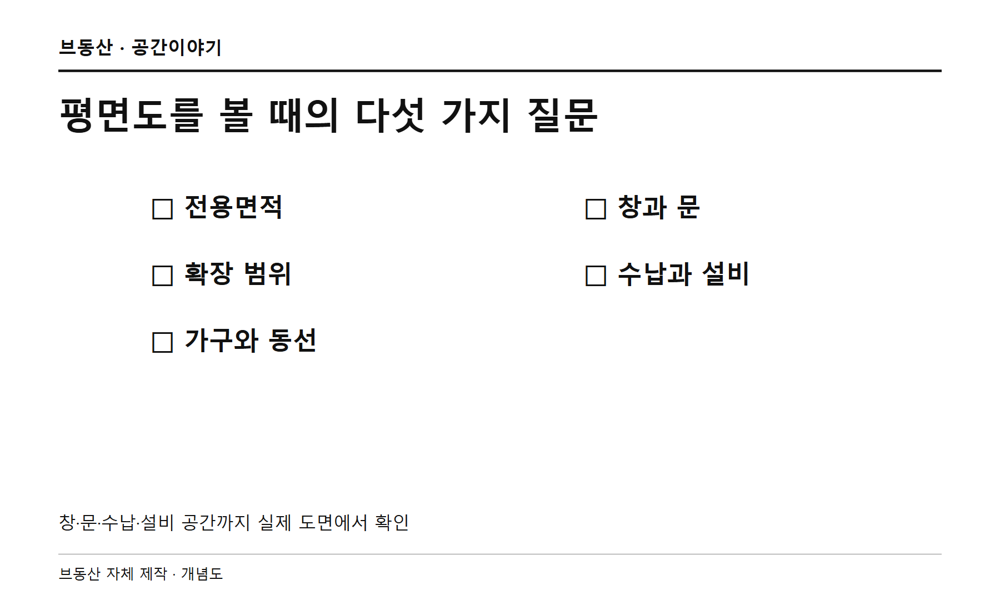

같은 84㎡라는데, 친구 집은 왜 우리 집보다 넓어 보일까? 평면도를 한 장씩 펼쳐 봤다.
1. 같은 숫자가 같은 거실을 뜻할까
친구 집도 우리 집도 84㎡. 그런데 식탁을 놓고 나니 우리 집이 더 비좁다. 같은 숫자인데 왜 다르게 느껴질까?
타입명만 보지 말고 모집공고의 정확한 전용면적을 보자. 84A와 84B의 소수점 아래 숫자가 다를 수 있다. 다만 작은 숫자 차이만으로 체감 차이를 전부 설명할 수는 없다.

2. 전용 84와 공급 84는 다른 말
주택법 시행규칙은 공동주택의 주거전용면적을 외벽 내부선 기준으로 산정하고, 여러 세대가 함께 쓰는 공용면적을 제외한다. 세대 안의 복도와 건물의 공용 복도는 다르다.
공급면적은 보통 전용면적에 주거공용면적을 더한 숫자다. 같은 전용면적이어도 계단과 복도 등에 배분되는 주거공용면적에 따라 공급면적이 다를 수 있다. 그렇다고 공용면적 차이가 곧바로 실내 크기 차이가 되는 것은 아니다.

3. 같은 면적도 나누는 방법이 다르다
방과 거실, 욕실과 세대 내부 동선에 공간을 어떻게 배분하느냐에 따라 쓰임새가 달라진다. 복도가 길면 방을 지나지 않고 움직이기 편할 수 있지만, 거실 가구 배치에는 제약이 생길 수도 있다.
거실이 넓어 보이는 평면이 모두에게 좋은 것은 아니다. 방 크기와 독립성, 수납, 문을 열고 다니는 경로까지 가족의 생활 방식과 함께 살펴보자.

실제 평면을 나란히 보면
삼성물산 래미안 포레카운티의 84A와 84B는 모두 84㎡대지만 방과 거실, 주방의 배치가 다르다. 숫자가 같다고 같은 구조는 아니다. 아래는 공식 자료의 평면이며 옵션·발코니 구성과 동·호수에 따라 실제 시공은 다를 수 있다. 공용면적 차이를 실내 크기 차이로 해석하지 않는다.


4. 발코니 확장이 만드는 차이
발코니를 확장한 집과 확장하지 않은 집은 전용면적 표기가 같아도 이용 공간의 구성과 체감이 다를 수 있다. 발코니 전체가 언제나 전용면적에서 제외된다거나, 확장하면 전부 전용면적에 더해진다고 말할 수는 없다.
바닥면적 산정은 법령의 기준과 예외, 설계도서에 따라 확인해야 한다. 계약 전 기본형과 확장형 도면, 선택 비용, 대피·설비 공간과 실제 시공 범위를 확인하자.

5. 평면도에서 꼭 볼 것
숫자보다 중요한 것은 우리 집 가구와 생활이 그 안에 들어가는지다. 거실 폭과 침실 치수를 보고 소파·식탁·침대의 크기를 대입해 보자. 치수가 없으면 임의로 계산하지 말고 시행사에 확인한다.
창과 문, 붙박이장, 실외기실 및 대피 공간의 위치도 살핀다. 도면 속 가구는 이해를 돕는 표현일 수 있으므로 실제 가구 크기와 문이 열리는 범위를 별도로 재보는 편이 좋다.

결론: 숫자 하나보다 내 생활을 보자
84㎡라는 숫자는 출발점이다. 정확한 전용면적에 더해 발코니의 확장 범위와 방의 배치, 가구가 놓일 자리까지 살펴보면 우리에게 맞는 집을 고르기가 조금 수월해진다.
직접 제작한 그림은 이해를 돕기 위한 가상의 개념도다. 특정 단지를 비교하거나 면적의 우열을 나타내지 않는다.